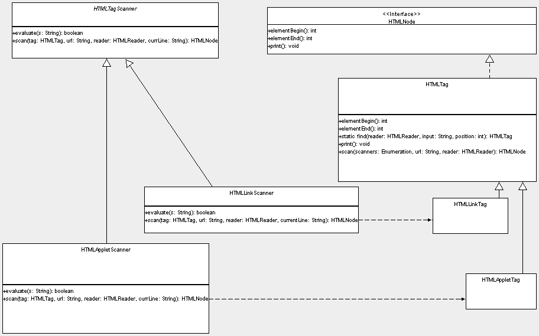

| An abstract HTMLTagScanner evaluates a tag, to indicate whether it
can handle it. The scan() method defines what happens if evaluate() returns
true.
In the diagram below, you can see concrete HTMLLinkScanner creating an HTMLLinkTag in its scan() method, and similarly for HTMLAppletScanner creating an HTMLAppletTag. HTMLNode is the parent interface for HTMLTag, from which the specific
tags are derived. From this hierarchy it is clear that, in order to extend
support in the parser for your own tag set, you need to write a scanner-tag
pair.
|
||||||
|  | ||||||
|
The basic scanners available are shown in the diagram below. |
||||||
|
Diagram generated with Argo UML